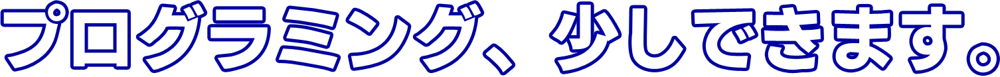

プログラミング、少しできます。 
PHP : サーバーサイドに関する造詣は浅いですが書けます。
JavaScriptの項のソフトウェアにもPHPを用いています。
JavaScript : Vueを用いた動的なコンテンツ作成を行えます。
Javaで作成したジャンケンのソフトウェアを
Web版としてリメイクしました。
Python : オープンソースのフリーウェアを公開しています。
しかし全く宣伝していないので恐らく利用者はいません。
これを元にSteamのMOD構成を
共有できるWebサービスを作ったら面白いかもしれない。
Java : どこぞで見たようなジャンケンのソフトを作りました。
しかし効果音を元ネタから流用しているため公開できません。